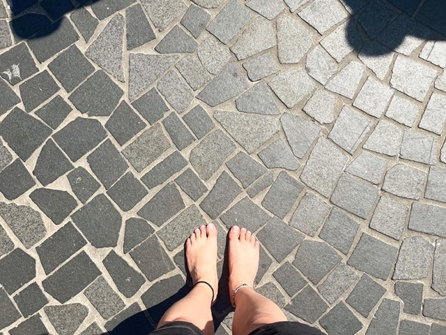
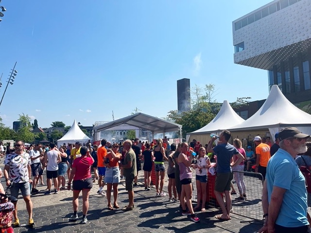

5k at Marathon Amersfoort
Posted on
I just finished the 5km in the Marathon Amersfoort event. It took about 40 minutes. I don’t have the exact stats this time because I forgot to stop the exercise tracking when I arrived finish line. But I could only run the first kilometre without a break and had a hard time keeping up the pace. I even thought quitting around the second kilometre. But somehow I managed to finish it. People gave kudos when seeing me running barefoot.
Now the question is: should I join the race around the Kasteel de Haar in the end of this June?
 